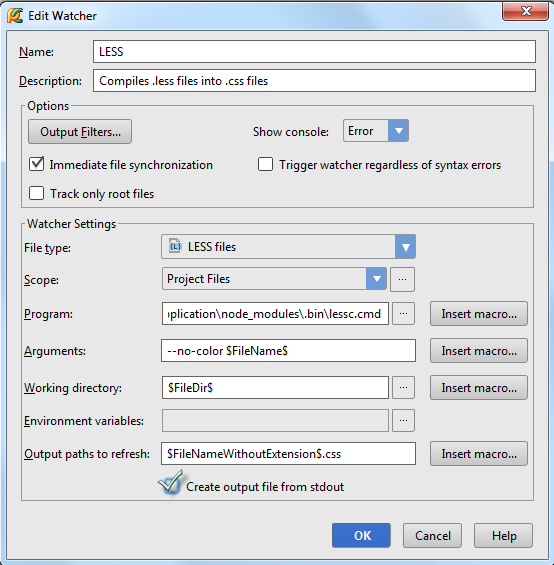
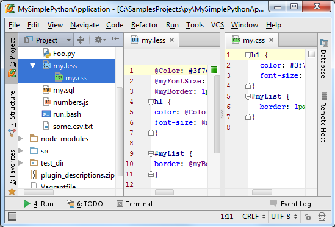

最全Pycharm教程（30）——Pycharm中的FileWatchers
1、主题
详细介绍PyCharm中file watcher的使用。
2、准备工作
（1）Pycharm版本为3.1或者更高
（2）File Watchers插件可用，这个插件在安装Pycharm应该会默认安装（若没有则需手动安装，参见product documentation for details）：
（3）提前熟悉相关使用要领，参见Using File Watchers
（4）这篇教程中我们会处理 LESS以及 CoffeeScript文件。建议提前做一些预习工作。
3、安装Node.js插件
首先需要下载安装Node.js插件。打开IDE设置的Plugins页面，搜索对应插件：
安装完成后，重启Pycharm。
4、安装LESS和CoffeeScript编译器
这里有两种方式安装这两个编译器：
（1）第一，手动安装。打开 local terminal（单击PyCharm窗口下边缘的Terminal窗口按钮），使用npm命令安装LESS和CoffeeScript：
（2）第二，使用Pycharm界面安装：单击主工具栏的设置按钮，在Node.js and NPM页面单击绿色加号：

在Available Packages对话框中，选择要安装的库（这里选择less），单击Install Package：
安装完成后，相关编译器文件会写入工程的根目录下：

稍后用到这些文件。
5、配置File Watchers
这步由Pycharm自动完成。
6、为LESS文件配置相应的file watcher
在没有进行相应配置是，打开LESS文件后Pycharm会给出错误提示：
单击Add watcher连接按钮，在弹出的对话框中选择file watcher的可执行类型（这里选择LESS），并制定从标准输出中指定生成格式：

通过这个配置窗口你能够大致了解file watcher的实际功能;
（1）监视项目中所有LESS文件的变化
（2）使用外部扩展来编译文件，一般使用定义在Program域中的lessc.cmd编译器。
7、为CofeeScript文件配置相应的file watcher
在没有进行相应配置是，打开CofeeScript文件后Pycharm同样会给出错误提示：
单击Add watcher连接按钮，在弹出的对话框中选择file watcher的可执行类型（这里选择CoffeeScript ）：
通过这个配置窗口你能够大致了解file watcher的实际功能：
（1）跟踪项目中所有CoffeeScript文件的变化。
（2）使用外部扩展.coffee来编译处于外部扩展extension .js的文件，一般使用定义在Program域中的 coffee.cmd编译器。
（3）使用外部扩展.coffee来编译处于外部扩展extension .map的文件，一般使用定义在Program域中的 coffee.cmd编译器。
8、编辑file watcher
打开LESS文件，做一些改动，例如重命名变量@myColor为@Color，并改变它的值。file watcher会立即处理改动后的文件，并通过外部.css将其变成一个输出文件：

接下来打开并编辑CoffeeScript文件，做一些修改，例如更改opposite变量的值，file watcher会生成一个JavaScript文件以及一个映射源文件：
注意PyCharm会在项目窗口中同时显示生成文件和源文件。
9、有问题？
File Watcher执行失败，PyCharm会给出提示以帮助修正：